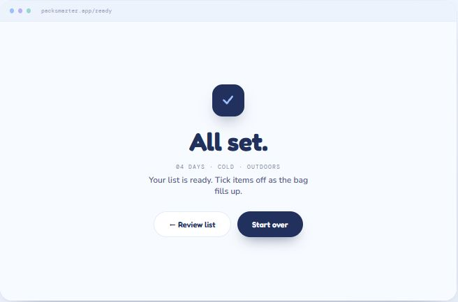

Pack light. Pack right. Three quick questions about a trip, one tidy list with exactly what you need — and nothing you don't.
The problem
Travel makes it easy to slip up — forget the charger, overpack five "just in case" outfits, or land somewhere without the one thing you actually needed. The usual packing lists don't help, because they're the same no matter where you're going: a flat checklist that tells you to bring seven pairs of socks for a three-day trip.
Pack Smarter takes the guesswork out. Instead of a one-size-fits-all list, it asks a few quick questions and builds a list around the trip you're actually taking.
The idea
The whole flow turns on three inputs: how many days you'll be gone, what the weather's like, and the kind of trip it is. A stepper sets the day count, and pill toggles handle the rest — Cold / 50–65° / 65–75° / Warm for weather, and Outdoors / Relaxing / City for trip type. One tap on "Build my list" and you're done answering questions.

The smart part
This is where the project earns its name. The list isn't a static template — the quantities and items shift with the answers, and they're capped to match how people actually pack. Rather than scaling linearly (nine days does not mean nine pairs of socks), Pack Smarter packs the 3-3-3 way: light, assuming a laundry run midway. Every list carries a "packing pass" chip summarizing the trip, and a note that says exactly why it's capped.

Weather and trip type reshape the contents, not just the counts. A cold outdoors trip surfaces a thermal base layer, beanie and gloves, and hiking boots; a warm relaxing trip swaps in a swimsuit, sandals, and a sun hat. Same flow, genuinely different list.


Using it
The list is a working tool, not a printout. Items check off with a strikethrough as the bag fills, each category shows a live count, and there's an "add your own item" field for the things no algorithm could guess. When everything's in, an "All set" screen closes the loop.

Design decisions
Reflection